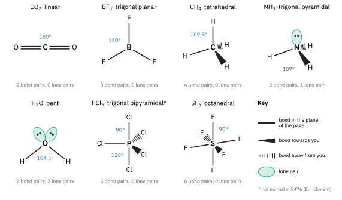
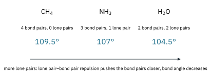
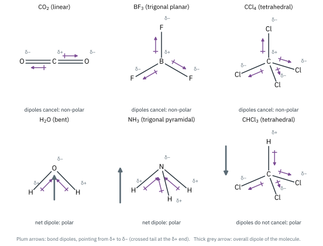

Topic 2 · Chemical Bonding Part 2
Chemical Bonding 2
On this page
Shapes of molecules
Before you can predict a shape, you need to know how many bond pairs and how many lone pairs surround the central atom. For simple molecules you can see this from a dot-and-cross diagram (Part 1). For anything less familiar, work it out step by step.
Step-by-step drawing of molecules
- Add up the outer-shell (valence) electrons of all the atoms. For Groups 1 and 2, this is the group number; for Groups 13 to 18, it is the group number minus 10 (so C 4, N 5, O 6, Cl 7).
- Account for any charge. For a positive ion, subtract one electron for each positive charge; for a negative ion, add one electron for each negative charge.
- Divide the total by 2 to get the number of electron pairs (bond pairs + lone pairs).
- Write the symbol for the central atom (usually the least electronegative atom, and never hydrogen), then put all the other atoms around it.
- Connect each outer atom to the central atom with a single bond (one pair each).
- Use the remaining pairs to complete the octet of each outer atom (except hydrogen, which needs only its one bond pair).
- Put any pairs that are still left on the central atom as lone pairs.
- If the central atom still has fewer than 8 electrons, move a lone pair from an outer atom into the space between the two atoms, to make a double bond. (Boron in BF3 is the exception: it stays with 6.)
Valence shell electron pair repulsion theory (VSEPR)
Electron pairs repel each other, so they spread out as far apart as possible in a molecule. The valence shell electron pair repulsion (VSEPR) theory accounts for the shape of a molecule by considering the repulsion between the electron pairs around its central atom.
- The electron pairs (bond pairs and lone pairs) around the central atom arrange themselves as far apart as possible, to minimise repulsion.
- A double or triple bond counts as one region of electron density: treat it like one bond pair when deciding the shape.
- Lone pairs are held closer to the central atom than bond pairs, so they repel more strongly: lone pair–lone pair > lone pair–bond pair > bond pair–bond pair.
- The shape of the molecule is named from the positions of the atoms only, not the lone pairs.
| Bond pairs | Lone pairs | Shape | Bond angle | Example |
|---|---|---|---|---|
| 2 | 0 | linear | 180° | CO2 |
| 3 | 0 | trigonal planar | 120° | BF3 |
| 4 | 0 | tetrahedral | 109.5° | CH4 |
| 3 | 1 | trigonal pyramidal | 107° | NH3 |
| 2 | 2 | bent (non-linear) | 104.5° | H2O |
| 5 | 0 | trigonal bipyramidal* | 90° and 120° | PCl5* |
| 6 | 0 | octahedral | 90° | SF6 |
*Enrichment. 9476 names BF3, CO2, CH4, NH3, H2O and SF6. PCl5 is not named, but the trigonal bipyramid is included because the shapes in the Enrichment box below are built on it.

Why the bond angle falls from CH4 to NH3 to H2O
CH4, NH3 and H2O all have four electron pairs around the central atom, arranged roughly tetrahedrally. In CH4 all four are bond pairs, so the angle is exactly 109.5°. In NH3, one pair is a lone pair. It repels the three bond pairs more strongly than they repel each other, squeezing the H–N–H angle to 107°. In H2O, two lone pairs squeeze the H–O–H angle further, to 104.5°.

Predicting the shapes of analogous molecules
Molecules and ions with the same numbers of bond pairs and lone pairs around the central atom have the same shape. Atoms in the same group usually give analogous molecules, and ions can be analogous to molecules (they are then often isoelectronic: they have the same number of electrons).
| Molecule or ion | Bond pairs, lone pairs | Analogous to | Shape and bond angle |
|---|---|---|---|
| SiCl4, NH4+, CCl4 | 4, 0 | CH4 | tetrahedral, 109.5° |
| PH3, PCl3, H3O+ | 3, 1 | NH3 | trigonal pyramidal, less than 109.5° |
| H2S, NH2−, OF2 | 2, 2 | H2O | bent, less than 109.5° |
| BCl3, AlCl3 (monomer) | 3, 0 | BF3 | trigonal planar, 120° |
| CS2, BeCl2 (gas) | 2, 0 | CO2 | linear, 180° |
| PF5, AsF5 (Enrichment) | 5, 0 | PCl5 | trigonal bipyramidal, 90° and 120° |
| SeF6, PF6− | 6, 0 | SF6 | octahedral, 90° |
You are not expected to know the exact angle in an analogous molecule, only to say how it compares with the parent. For example, the angle in PH3 is actually 93.5° and in H2S 92°: the bonding pairs of these larger atoms are further from the central nucleus and the lone pairs spread out more. ‘Less than 109.5°’ is the expected answer.1
Bond polarity and polar molecules
Many molecules have dipole moments, due to a non-uniform distribution of positive and negative charge over their atoms, caused by differences in electronegativity. These are what we described as polar bonds in Part 1. A molecule with an overall permanent dipole moment is called a polar molecule.
A molecule can contain polar bonds and still be non-polar overall. Each polar bond has a bond dipole, which has a direction as well as a size. If the molecule is symmetrical, the bond dipoles cancel.
Guidelines for deciding if a molecule is polar or non-polar
- Work out the shape of the molecule (VSEPR).
- Mark each polar bond with δ+ and δ−, and draw its dipole as an arrow from the δ+ end to the δ− end.
- If the arrows cancel each other out, because identical bonds are arranged symmetrically around the central atom (linear, trigonal planar, tetrahedral, trigonal bipyramidal or octahedral, with no lone pairs), there is no overall dipole: a non-polar molecule.
- If the arrows do not cancel, because the shape is not symmetrical (bent, pyramidal), or because the bonds are not all the same, there is an overall dipole: a polar molecule.

- CO2 is linear. The two C=O dipoles are equal and point in opposite directions, so they cancel. CO2 is non-polar, although each C=O bond is polar.
- H2O is bent. The two O–H dipoles both point up towards O and do not cancel. Water is polar. The lone pairs on O add to the effect.
- NH3 is trigonal pyramidal and polar, for the same reason.
- BF3 (trigonal planar) and CCl4 (tetrahedral) are symmetrical, with identical bonds: non-polar.
- CHCl3 has the same tetrahedral shape as CCl4, but one of the four bonds is different (C–H instead of C–Cl). The dipoles no longer cancel, and CHCl3 is polar.
Additional information
- Beyond the syllabus: for P, S and the heavier elements, the bond angles in the hydrides are close to 90°. This is usually explained by the larger central atom and the more diffuse bonding pairs. You do not need to explain it. ↩